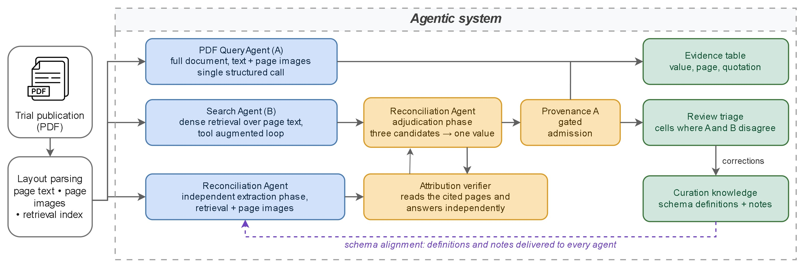
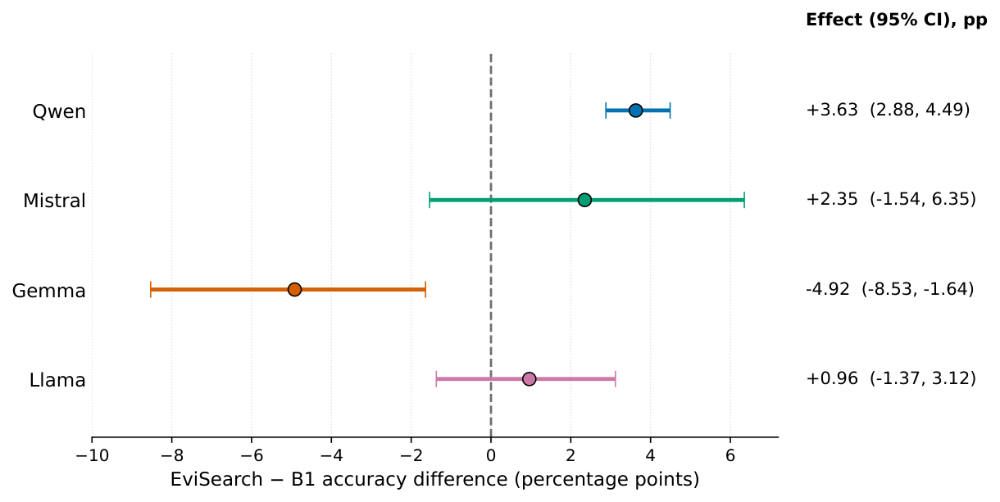
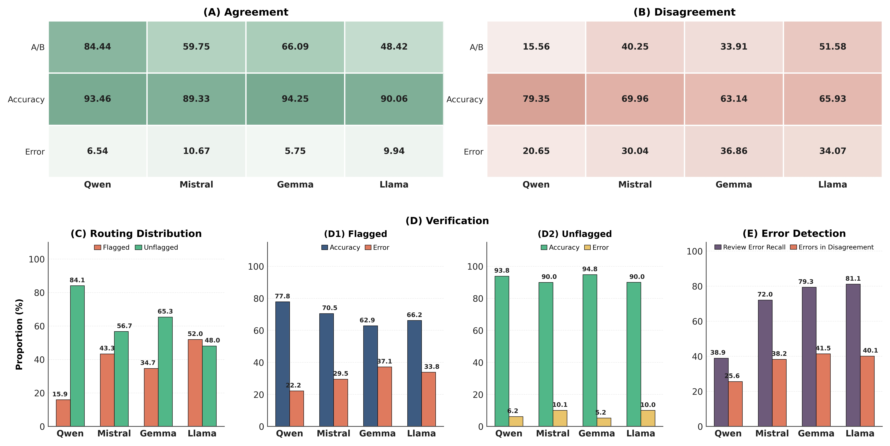
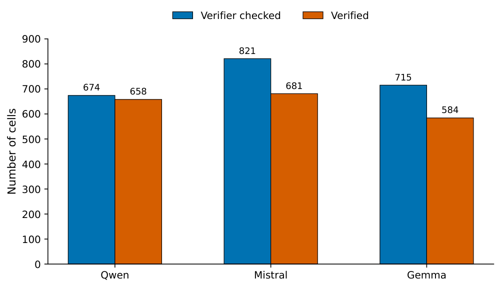

EviSearch · Clinical-trial evidence extraction
Reliable extraction of clinical-trial evidence with provenance, verification, and targeted review
EviSearch extracts structured clinical-trial evidence while retaining page-level provenance, checking cited claims independently, and using review signals to focus human attention.
Method
From publication to auditable evidence
Independent extraction is followed by reconciliation and a separate page-level attribution check. The resulting table keeps each answer connected to its source.

Clinical-trial publication → Agent A + Agent B → independent reconciliation → attribution verification → structured clinical evidence → targeted review
Manuscript
Abstract
The manuscript abstract was not present in the repository source material and is intentionally not reconstructed here.
Reference benchmark
Qwen benchmark performance
Scores use the frozen correctness/completeness labels. Graded accuracy is the mean of correctness and completeness; a binary error is a cell that is not fully correct.
| System | Accuracy (%) | Correctness (%) | Completeness (%) |
|---|---|---|---|
| B1 single-pass | 87.63 | 88.05 | 87.22 |
| Agent A | 89.14 | 89.62 | 88.65 |
| Agent B | 91.05 | 91.65 | 90.45 |
| Full EviSearch | 91.26 | 91.80 | 90.71 |
For Qwen, full EviSearch exceeded B1 in 10/10 papers (+3.63 percentage points). The verifier checked 674/1,330 cells (50.68%); 658/674 checked cells were independently reproduced (97.63%, or 49.47% of all cells). The existing Qwen results contain no targeted-review simulation estimate.
Cross-model generalization
Performance varies across model families
All systems use the same 10 publications and 133 fields per paper. EviSearch’s change from B1 is reported as a paired paper-level difference with the saved 95% confidence interval.
| Model | B1 accuracy | Agent A | Agent B | EviSearch | E − B1 pp (95% CI) | Papers E > B1 |
|---|---|---|---|---|---|---|
| Qwen | 87.63 | 89.14 | 91.05 | 91.26 | +3.63 (2.88, 4.49) | 10/10 |
| Mistral | 79.17 | 84.83 | 69.66 | 81.52 | +2.35 (−1.54, 6.35) | 6/10 |
| Gemma | 88.63 | 88.55 | 73.76 | 83.70 | −4.92 (−8.53, −1.64) | 3/10 |
| Llama | 76.65 | 82.69 | 49.77 | 77.61 | +0.96 (−1.37, 3.12) | 7/10 |
Point differences and confidence intervals match the paper's forest plot exactly, including the Gemma point estimate of −4.92 (the unrounded difference; the aggregate summary table elsewhere rounds this to −4.93).

Scoring
Correctness and completeness
Graded accuracy is defined as (correctness + completeness) / 2. Reporting the components separately shows both whether the extracted values agree with the reference and whether required information is complete.
Show correctness and completeness by model and system
| Model | System | Accuracy | Correctness | Completeness |
|---|---|---|---|---|
| Qwen | B1 | 87.63 | 88.05 | 87.22 |
| Agent A | 89.14 | 89.62 | 88.65 | |
| Agent B | 91.05 | 91.65 | 90.45 | |
| EviSearch | 91.26 | 91.80 | 90.71 | |
| Mistral | B1 | 79.17 | 80.41 | 77.93 |
| Agent A | 84.83 | 85.71 | 83.95 | |
| Agent B | 69.66 | 70.19 | 69.14 | |
| EviSearch | 81.52 | 81.84 | 81.20 | |
| Gemma | B1 | 88.63 | 89.10 | 88.16 |
| Agent A | 88.55 | 88.83 | 88.27 | |
| Agent B | 73.76 | 74.02 | 73.50 | |
| EviSearch | 83.70 | 83.76 | 83.65 | |
| Llama | B1 | 76.65 | 77.59 | 75.71 |
| Agent A | 82.69 | 83.68 | 81.69 | |
| Agent B | 49.77 | 49.77 | 49.77 | |
| EviSearch | 77.61 | 78.31 | 76.92 |
Targeted review
Disagreement marks higher-risk regions
Agent A/B disagreement rates and EviSearch error rates are heterogeneous across families. Disagreement and review flags are signals for prioritizing inspection, not guarantees that a cell is wrong or correct.
| Model | A/B agree | A/B disagree | E error if agree | E error if disagree | Flagged | Review error recall |
|---|---|---|---|---|---|---|
| Qwen | 84.44% | 15.56% | 8.55% | 25.60% | 15.94% | 38.93% |
| Mistral | 59.70% | 40.30% | 11.59% | 38.25% | 43.31% | 72.05% |
| Gemma | 66.09% | 33.91% | 6.26% | 41.46% | 34.66% | 79.34% |
| Llama | 48.42% | 51.58% | 9.94% | 40.09% | 51.95% | 81.12% |

Evidence provenance
Coverage and independent reproduction are distinct
Verifier coverage is the number of cells with at least one detailed saved check divided by all 1,330 cells. Reproduction is the number of checked cells marked verified divided by checked cells. Not every extracted cell was independently verified.
| Model | Checked cells | Coverage | Reproduced / checked | Reproduction among checked | Reproduced / all cells |
|---|---|---|---|---|---|
| Qwen | 674 / 1,330 | 50.68% | 658 / 674 | 97.63% | 49.47% |
| Mistral | 821 / 1,330 | 61.73% | 681 / 821 | 82.95% | 51.20% |
| Gemma | 715 / 1,330 | 53.76% | 584 / 715 | 81.68% | 43.91% |
| Llama | 0 / 1,330 | 0.00% | 0 / 0 | N/A | 0.00% |
Evidence modality
| Model | Text-associated error | Table-associated error | Figure-associated error |
|---|---|---|---|
| Qwen | 15.41% (80/519) | 17.12% (25/146) | 40.00% (6/15) |
| Mistral | 23.26% (110/473) | 37.69% (124/329) | 56.38% (53/94) |
| Gemma | 31.41% (196/624) | 3.17% (2/63) | 35.42% (17/48) |
| Llama | N/A | N/A | N/A |

Llama has no detailed verifier checks in the saved run and is omitted from this figure.
System
How EviSearch works
Agent A
Reads the paper as a whole and extracts requested fields with page attribution.
Agent B
Searches retrieved page text for fields that remain uncertain or unanswered.
Reconciliation
Reads contested columns independently before seeing A/B candidates, then adjudicates the answers.
Attribution verification
A separate reading of cited pages attempts to reproduce each checked value and its evidence.
Targeted review
Disagreement and pipeline review flags prioritize cells for human inspection; neither signal guarantees correctness.
Shared retrieval
Qwen/Qwen3-Embedding-8B page embeddings, top-k 5, no reranker.
Reproducibility
Models and analysis
| Display family | Exact evaluated model |
|---|---|
| Qwen | Qwen/Qwen3.6-27B |
| Mistral | mistralai/Mistral-Small-3.2-24B-Instruct-2506 |
| Gemma | google/gemma-4-31B-it |
| Llama | RedHatAI/Llama-4-Scout-17B-16E-Instruct-quantized.w4a16 |
- Repository README and setup
- Reproducibility guide
- Exact production prompts and scoring rubric
- Pipeline and scoring scripts
- Analysis scripts
- Canonical data and confidence-interval code
- Final run headers
The table values above are from saved fixed-judge reports and the saved paper-clustered bootstrap. Reproducing confidence intervals uses 10,000 paper-level resamples (10 papers with replacement, all 133 cells retained), seed 20260927. No cells are resampled independently.
Availability
Data and code
The repository dataset includes the benchmark annotations, document list, and 26 source PDFs; the repository owner has confirmed PDF redistribution rights. Structured annotations and extracted quotations may have separate rights terms. The final run outputs and scoring labels are not included in the public-release staging copy.
Code and prompt definitions are in the linked repository. The formal manuscript data-availability statement and publication details were not present in the available source bundle.
Citation
BibTeX
A BibTeX entry will be added when the manuscript’s authors and publication metadata are finalized. No DOI or author list is inferred here.